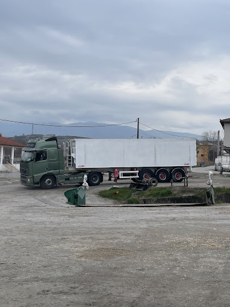
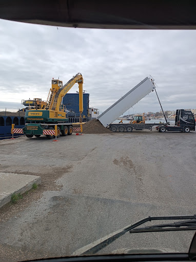
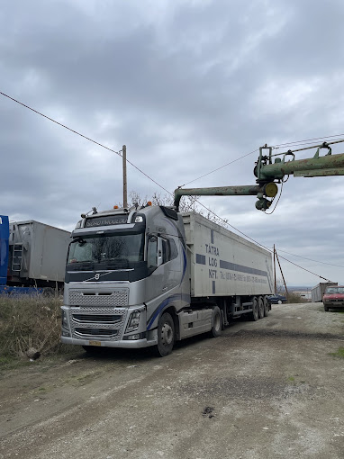

Δραστηριότητες
Εξοπλισμός για
πραγματική εργασία.
Οι βασικές κατηγορίες του δημόσιου προφίλ σε μία οργανωμένη εικόνα.
Τι θα βρείτε
Κάθε κατηγορία, με τον δικό της ρόλο.
Η διάκριση των κατηγοριών βοηθά να ξεκινήσει η αναζήτηση από τη χρήση και όχι από τον θόρυβο της αγοράς.

Φορτηγά
Βαρέα φορτηγά άνω των 7,5 τόνων εμφανίζονται ως ξεχωριστή κατηγορία στο δημόσιο dealer profile. Για κάθε όχημα, τα πραγματικά στοιχεία και η διαθεσιμότητα επιβεβαιώνονται στην εκάστοτε καταχώρηση.
Άνοιγμα κατηγορίας
Τράκτορες
Κατηγορία για επαγγελματικές μεταφορικές εφαρμογές. Η δημόσια σελίδα περιλαμβάνει καταχωρήσεις τρακτόρων, χωρίς η παρούσα σελίδα να υποκαθιστά τον έλεγχο των στοιχείων και της κατάστασης.
Άνοιγμα κατηγορίας
Επικαθήμενα
Υπερκατασκευές και επικαθήμενα για διαφορετικές ανάγκες μεταφοράς. Η καταλληλότητα εξαρτάται από τις διαστάσεις, το ωφέλιμο φορτίο και την πραγματική χρήση.
Άνοιγμα κατηγορίας
Μηχανήματα έργων
Μηχανήματα έργων και βαρέος εξοπλισμού εμφανίζονται στο δημόσιο προφίλ ως αυτοτελής κατηγορία. Ρωτήστε για το συγκεκριμένο μοντέλο, το έτος και τα στοιχεία της καταχώρησης.
Άνοιγμα κατηγορίας
Αγροτικός εξοπλισμός
Στις δημόσιες δραστηριότητες αναφέρονται αγροτικά είδη, εργαλεία και γεωργικός εξοπλισμός. Η ενότητα παραμένει ξεχωριστή από τον βασικό κορμό των επαγγελματικών οχημάτων.
Ρωτήστε μαςΟι εικόνες προέρχονται από δημόσιο φωτογραφικό και καταχωρησιακό υλικό και παραμένουν ενδεικτικές· δεν αποτελούν επιβεβαίωση τρέχοντος αποθέματος.
Επόμενο βήμα
Αναζητάτε κάτι συγκεκριμένο;
Στείλτε μας κατηγορία, μάρκα, χρήση ή τον σύνδεσμο της καταχώρησης που σας ενδιαφέρει.